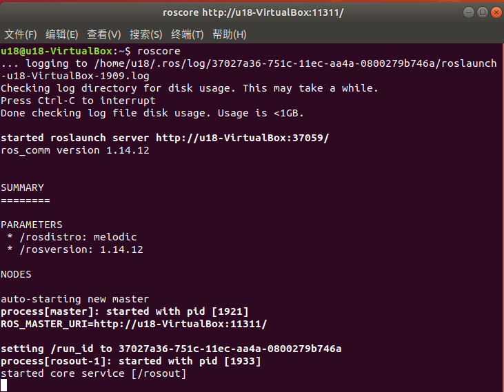

机械臂的控制
注意：pymycobot 驱动库的版本必须大于4.0.0
1 滑块控制
打开命令行并运行：
roslaunch mycobot_pro_450 slider_control.launch
# 如果末端配有myGripper F100 力控夹爪，则运行：
roslaunch mycobot_pro_450 slider_control_force_gripper.launch
打开 rviz 和一个滑块组件，您将看到如下界面：

如果末端装有myGripper F100 力控夹爪，则会看到以下界面：

然后你就可以在 rviz 中 控制模型，通过拖动滑块使其移动。如果想让真实的霉菌机器人随着模型移动，则需要打开另一个命令行并运行：
# Pro450 默认ip地址为"192.168.0.232"，端口号为 4500。
rosrun mycobot_pro_450 slider_control.py
# 如果末端配有myGripper F100 力控夹爪，则运行：
rosrun mycobot_pro_450 slider_control_force_gripper.py
请注意：由于在命令输入的同时机械臂会移动到模型目前的位置，在您使用命令之前请确保 rviz 中的模型没有出现穿模现象
不要在连接机械臂后做出快速拖动滑块的行为，防止机械臂损坏
2 模型跟随
除了上述控制外，我们还可以让模型跟随真实的机械臂移动。
打开命令行，启动ros节点：
roscore

然后打开新的命令行并运行：
rosrun mycobot_pro_450 follow_display.py
运行成功后，需要同时按住机器末端按钮才能拖拽关节移动，终端输出信息如下
Trying to connect to real MyCobot Pro450...
IP: 192.168.0.232, port: 4500
Please press the button at the end of the machine to drag the joint.
请按下机器末端按钮进行关节拖拽运动
Publishing ...
最后打开另一个命令行并运行：
roslaunch mycobot_pro_450 follow_display.launch
它将 打开 rviz，显示模型跟随效果。此时拖动真实机械臂关节，仿真模型将会跟随真实机械臂运动。
3 GUI 控制
在前述内容的基础上，本软件包还提供了一个简单的图形用户界面（GUI）控制界面。连接到 mycobot。
打开命令行：
# Pro450 默认ip地址为"192.168.0.232"，端口号为 4500。
roslaunch mycobot_pro_450 simple_gui.launch
运行成功后，终端信息输出如下：
SUMMARY
========
PARAMETERS
* /mycobot_services/ip: 192.168.0.232
* /mycobot_services/port: 4500
* /robot_description: <?xml version="1....
* /rosdistro: noetic
* /rosversion: 1.16.0
NODES
/
mycobot_services (mycobot_pro450_communication/mycobot_services.py)
real_listener (mycobot_pro_450/listen_real.py)
robot_state_publisher (robot_state_publisher/robot_state_publisher)
rviz (rviz/rviz)
simple_gui (mycobot_pro_450/simple_gui.py)
auto-starting new master
process[master]: started with pid [69286]
ROS_MASTER_URI=http://localhost:11311
setting /run_id to 5d888b36-8c89-11f0-b9c8-1f4f9291f209
process[rosout-1]: started with pid [69301]
started core service [/rosout]
process[robot_state_publisher-2]: started with pid [69304]
process[rviz-3]: started with pid [69308]
process[mycobot_services-4]: started with pid [69310]
process[real_listener-5]: started with pid [69311]
process[simple_gui-6]: started with pid [69317]
Current pymycobot library version: 4.0.1b0
pymycobot library version meets the requirements!
[INFO] [1757318207.730721]: Starting MyCobot service node...
[INFO] [1757318207.733988]: 192.168.0.232,4500
MyCobot Status
--------------------------------
Joint Limit:
joint 1: -165 ~ +165
joint 2: -120 ~ +120
joint 3: -158 ~ +158
joint 4: -165 ~ +165
joint 5: -165 ~ +165
joint 6: -175 ~ +175
[INFO] [1757318207.795377]: Services are ready
然后在GUI界面输入相关角度和坐标信息，点击对应按钮，即可实现真实机器与仿真模型的同步运动
注意： 使用夹爪开关按钮前，请确保自适应夹爪已连接至机器人手臂末端。
4 键盘控制
在 mycobot_pro_450 软件包中添加了键盘控制功能，并在 rviz 中执行实时同步。 该功能依赖于 pythonApi，因此请务必与真正的机械臂连接。
打开命令行并运行：
# Pro450 默认ip地址为"192.168.0.232"，端口号为 4500。
roslaunch mycobot_pro_450 teleop_keyboard.launch
运行效果如下

mycobot 的信息将在命令行中输出如下：
SUMMARY
========
PARAMETERS
* /mycobot_services/ip: 192.168.0.232
* /mycobot_services/port: 4500
* /robot_description: <?xml version="1....
* /rosdistro: noetic
* /rosversion: 1.16.0
NODES
/
mycobot_services (mycobot_pro450_communication/mycobot_topics.py)
real_listener (mycobot_pro_450/listen_real_of_topic.py)
robot_state_publisher (robot_state_publisher/robot_state_publisher)
rviz (rviz/rviz)
auto-starting new master
process[master]: started with pid [76496]
ROS_MASTER_URI=http://localhost:11311
setting /run_id to cf3d03b0-8c89-11f0-b9c8-1f4f9291f209
process[rosout-1]: started with pid [76511]
started core service [/rosout]
process[robot_state_publisher-2]: started with pid [76514]
process[rviz-3]: started with pid [76518]
process[mycobot_services-4]: started with pid [76520]
process[real_listener-5]: started with pid [76522]
Current pymycobot library version: 4.0.1b0
pymycobot library version meets the requirements!
[INFO] [1757318398.354867]: 192.168.0.232,4500
MyCobot Status
--------------------------------
Joint Limit:
joint 1: -165 ~ +165
joint 2: -120 ~ +120
joint 3: -158 ~ +158
joint 4: -165 ~ +165
joint 5: -165 ~ +165
joint 6: -175 ~ +175
然后打开另一个命令行运行:
rosrun mycobot_pro_450 teleop_keyboard.py
你将看到命令行输出如下:
Mycobot Pro450 Teleop Keyboard Controller (ROS1 - Topic Version)
---------------------------------------------------------
Movement (Cartesian):
w (x+)
a (y+) s (x-) d (y-)
z (z-) x (z+)
Rotation (Euler angles):
u (rx+) i (ry+) o (rz+)
j (rx-) k (ry-) l (rz-)
Movement Step:
+ : Increase movement step size
- : Decrease movement step size
Gripper:
g - open h - close
Other:
1 - Go to init pose
2 - Go to home pose
3 - Save current pose as home
q - Quit
currently: speed: 50 change percent: 5
在该终端中，您可以控制机械臂的状态，并使用命令行中的按键移动机械臂。
注意：先输入2机械臂回到起始点之后，再进行其他坐标控制操作，终端会有如下提示：
[WARN] [1758001794.385321]: Coordinate control disabled. Please press '2' first.
[INFO] [1758001804.552778]: Home pose reached. Coordinate control enabled.
[INFO] [1758001817.069637]: Home pose reached. Coordinate control enabled.
[WARN] [1758001836.301070]: Returned to zero. Press '2' to enable coordinate control.
[WARN] [1758001848.830702]: Coordinate control disabled. Please press '2' first.
[INFO] [1758001863.383565]: Home pose reached. Coordinate control enabled.
[WARN] [1758001933.596504]: Returned to zero. Press '2' to enable coordinate control.
[WARN] [1758001942.051899]: Coordinate control disabled. Please press '2' first.
本脚本支持的参数：
- _speed：机械臂的运动速度
- _change_percent：移动距离百分比
5 moveit 使用
mycobot_ros 整合了 MoveIt 部分。
打开命令行并运行：
roslaunch mycobot_pro450_moveit demo.launch
运行效果如下：
终端将输出如下信息，代表成功启动moveit：
[ INFO] [1757321505.678763337]: Loading robot model 'firefighter'...
[ INFO] [1757321505.782983258]: Set joints of group 'arm_group' to pose 'init_pose'.
[ INFO] [1757321505.783324504]: Fake controller 'fake_arm_group_controller' with joints [ joint1 joint2 joint3 joint4 joint5 joint6 ]
[ INFO] [1757321505.783798265]: Returned 1 controllers in list
[ INFO] [1757321505.792047465]: Trajectory execution is managing controllers
[ INFO] [1757321505.792117958]: MoveGroup debug mode is ON
Loading 'move_group/ApplyPlanningSceneService'...
Loading 'move_group/ClearOctomapService'...
Loading 'move_group/MoveGroupCartesianPathService'...
Loading 'move_group/MoveGroupExecuteTrajectoryAction'...
Loading 'move_group/MoveGroupGetPlanningSceneService'...
Loading 'move_group/MoveGroupKinematicsService'...
Loading 'move_group/MoveGroupMoveAction'...
Loading 'move_group/MoveGroupPickPlaceAction'...
Loading 'move_group/MoveGroupPlanService'...
Loading 'move_group/MoveGroupQueryPlannersService'...
Loading 'move_group/MoveGroupStateValidationService'...
Loading 'pilz_industrial_motion_planner/MoveGroupSequenceAction'...
[ INFO] [1757321505.848190702]: initialize move group sequence action
[ INFO] [1757321505.853932419]: Reading limits from namespace /robot_description_planning
Loading 'pilz_industrial_motion_planner/MoveGroupSequenceService'...
[ INFO] [1757321505.867558584]: Reading limits from namespace /robot_description_planning
[ INFO] [1757321505.884930897]:
********************************************************
* MoveGroup using:
* - ApplyPlanningSceneService
* - ClearOctomapService
* - CartesianPathService
* - ExecuteTrajectoryAction
* - GetPlanningSceneService
* - KinematicsService
* - MoveAction
* - PickPlaceAction
* - MotionPlanService
* - QueryPlannersService
* - StateValidationService
* - SequenceAction
* - SequenceService
********************************************************
[ INFO] [1757321505.885485766]: MoveGroup context using planning plugin ompl_interface/OMPLPlanner
[ INFO] [1757321505.885536833]: MoveGroup context initialization complete
You can start planning now!
[ INFO] [1757321508.935642298]: Loading robot model 'firefighter'...
[ INFO] [1757321509.253483659]: Starting planning scene monitor
[ INFO] [1757321509.257223628]: Listening to '/move_group/monitored_planning_scene'
[ INFO] [1757321509.375270577]: Constructing new MoveGroup connection for group 'arm_group' in namespace ''
[ INFO] [1757321510.628737935]: Ready to take commands for planning group arm_group.
基本路径规划操作如下：
如果想让真正的机械臂同步执行计划，则需要打开另一个命令行并运行：
# Pro450 默认ip地址为"192.168.0.232"，端口号为 4500。
rosrun mycobot_pro450_moveit sync_plan.py
修改运动速度
为了防止关节在实际机械臂运动过程中晃动，需要降低关节的运动速度。
- 在
sync_plan.py文件中，修改机械臂 Python API 的速度参数，此处改为 25。
...
def callback(data: JointState):
"""Callback function for ROS JointState subscription.
This function converts incoming joint positions (radians) to angles
in degrees and sends them to the Pro450 robotic arm.
Args:
data (JointState): Joint state message containing joint positions.
"""
data_list = []
for index, value in enumerate(data.position):
radians_to_angles = round(math.degrees(value), 2)
data_list.append(radians_to_angles)
rospy.loginfo(data_list)
mc.send_angles(data_list, 25)
...
在 Moveit RViz 界面中，修改速度和加速度的缩放比例。在这里，将其改为 0.1，然后保存当前配置。